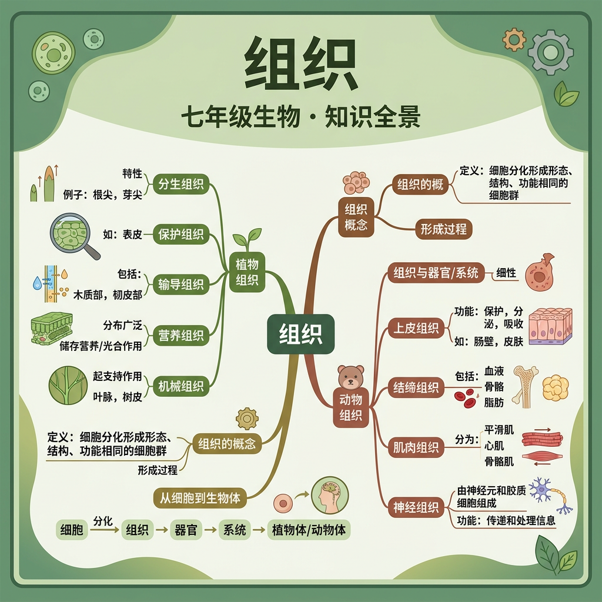

从细胞到生命体——探索生命结构的层次之美

我们已知细胞通过有丝分裂增殖，通过分化形成形态功能不同的细胞群体。
如何将数十亿个分化细胞组织起来，形成有序运转的完整生命体？
生命体按照细胞→组织→器官→系统→个体的层次组织，实现精密协调。
| 组织 | 细胞特征 | 主要功能 | 分布举例 |
|---|---|---|---|
| 上皮组织 | 细胞排列紧密，细胞间质少 | 保护、吸收、分泌、排泄 | 皮肤表皮、消化道内壁 |
| 肌肉组织 | 含大量肌丝（肌动蛋白、肌球蛋白） | 收缩与舒张，运动 | 骨骼肌、心肌、平滑肌 |
| 神经组织 | 神经元（树突、轴突）+ 神经胶质细胞 | 感受刺激、传导兴奋 | 脑、脊髓、神经纤维 |
| 结缔组织 | 细胞间质多，细胞分散 | 连接、支持、营养、保护 | 血液、骨、软骨、脂肪 |
| 组织 | 细胞特征 | 主要功能 | 分布位置 |
|---|---|---|---|
| 分生组织 | 细胞小、壁薄、核大、液泡小，持续分裂 | 产生新细胞，促进生长 | 茎尖、根尖（分生区） |
| 营养组织 | 细胞大、壁薄、液泡大；叶肉含叶绿体 | 光合作用、储藏有机物 | 叶肉、果肉、块茎 |
| 保护组织 | 细胞扁平，排列紧密，外壁角质化 | 覆盖保护，减少蒸腾 | 根、茎、叶的表皮 |
| 输导组织 | 导管（死细胞）/ 筛管（活细胞，无核） | 运输水、无机盐、有机物 | 叶脉、茎的维管束 |
一个器官通常由多种组织构成，各组织协调配合完成器官功能。
将下方组织名称拖到对应的分类区域